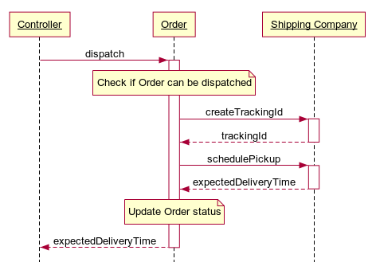
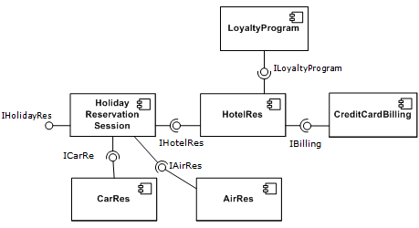

class: center, middle, main-title # Software Design and Architecture Part 3:<br> Sequence and Component Diagrams,<br> Information Hiding --- ## Today - Content - Modelling control flow within a software system - UML sequence diagrams - Modelling higher level structure - UML component diagrams - One more design principle - Information hiding - Questions, ideas, comments - [Sli.do #VUSE1907](https://app.sli.do/event/2nqavhzp) --- ## Recap: UML class diagram Describes: - Static structure (classes in an OO system) - (Optionally) their attributes and methods - Connections between classes -- Does not describe: - **Details of how the classes interact with each other** - How methods are implemented (algorithmic details) --- ## UML sequence diagram It is: - An "interaction diagram" - The 2nd most used UML diagram -- <span>Describes:</span> - A single scenario executing within a system - Who is involved - What messages are sent - In what sequence --- ## UML sequence diagram  ??? Diagram source: participant Controller participant Order participant Shipping Company Controller -> +Order: dispatch note over Order: Check if Order can be dispatched Order -> +Shipping Company: createTrackingId Shipping Company --> -Order: trackingId Order -> +Shipping Company: schedulePickup Shipping Company --> -Order: expectedDeliveryTime note over Order: Update Order status Order --> -Controller: expectedDeliveryTime --- ## UML sequence diagram - Vertical axis represents time (top to bottom) -- - Allows modelling at different levels of detail - Actors can be roles/people, systems, components, classes/objects, etc. - Messages can be broad or specific -- - Has many more features - Repetition (loops) - Alternatives (if/else) - Abstraction/nesting (subsequence as a separate diagram) --- ## Why sequence diagrams? - Can be read and drawn by non-coders -- - A good diagram is above the level of code -- - All control flow is visible at once --- class: middle, center ## Back to *design* in general --- ## Model levels - High-level - *system as one entity* - System context or use-case diagram - Low-level - *every entity represented* - Class diagram -- ### What if we have many entities? --- ## Abstraction to the rescue > We can solve any problem by introducing an extra level of indirection -- > (… except for the problem of too many levels of indirection). > <br><br>— <cite>General principle for managing complexity through abstraction</cite> --- ## Components - **Encapsulate** a set of related classes -- - Communicate through **interfaces** -- - Can be replaced -- - Are often reusable --- ## UML component diagram  --- ## UML component diagram - Primary focus is integration - What are the *components*? - What are their *provided* and *required* interfaces? -- - Allows modelling at different levels - Based on what we see as *component* --- ## Why component diagrams? - Much higher level than code -- - Can be understood by non-coders -- - Can help identify integration issues early --- class: middle ### What if we have many components? --- ## Levels of abstraction - Classes - Components -- - Modules -- - Subsystems -- - Systems -- - All systems as one entity --- ## Design principles Design at all levels - Has the same goals - Follows the same principles -- Desired qualities - High cohesion - Low coupling - Modularity (separation of responsibilities) --- ## Information hiding - Fundamental cost in SE is accomodating change -- - A change that modifies multiple components is more costly than a change that is isolated in a single component -- - Therefore, define - interfaces that capture stable aspects -- - implementations that capture changeable aspects -- - Remember [Parnas: On the criteria to be used in decomposing systems into modules](https://blog.acolyer.org/2016/09/05/on-the-criteria-to-be-used-in-decomposing-systems-into-modules/) --- ## Caveat - You cannot create a design that anticipates **all** changes -- - Analogy with car engine maintenance -- - Therefore, anticipate **likely** changes --- ## So what can we hide? - Algorithms -- - Data representations -- - Sources of information -- - Hardware specifics -- - Specifics of external API or external domain --- ## Bezos API mandate - Internal memo at Amazon (~2002) by Jeff Bezos (CEO) - Best known from when an ex-Amazon employee accidentally posted his rant to a wider audience - Secondary sources: - [Just the API mandate](https://news.ycombinator.com/item?id=18916406) - [Same with more context](https://gigaom.com/2011/10/12/419-the-biggest-thing-amazon-got-right-the-platform/) --- ## Bezos API mandate > - **All teams will henceforth expose** their data and functionality through **service interfaces**. > - Teams must communicate with each other through these interfaces. > - There will be no other form of interprocess communication allowed: no direct linking, no direct reads of another team's data store, no shared-memory model, no back-doors whatsoever. **The only communication allowed is via service interface calls over the network.** --- ## Bezos API mandate (2) > - It doesn't matter what technology they use. HTTP, Corba, Pubsub, custom protocols -- doesn't matter. Bezos doesn't care. > - **All service interfaces, without exception, must be** designed from the ground up to be **externalizable**. That is to say, the team must plan and design to be able to expose the interface to developers in the outside world. No exceptions. > - Anyone who doesn't do this will be fired. -- Notice principles: - Information hiding - Reusability --- ## Key takeaways - Sequence diagrams are about high-level view of control flows -- - Component diagrams are about integration -- - Design at all levels has similar goals and principles -- - Information hiding is one of the main design principles --- class: middle, center # Questions? --- ## Mid-course feedback - A poll is open on [Google Forms](https://forms.gle/4EAzS9anen8nYNSa7) - Please fill it yourself and ask your peers to do it too --- ## Next time - Software construction - What is it about? - How to write code effectively? - What tools and techniques are available?